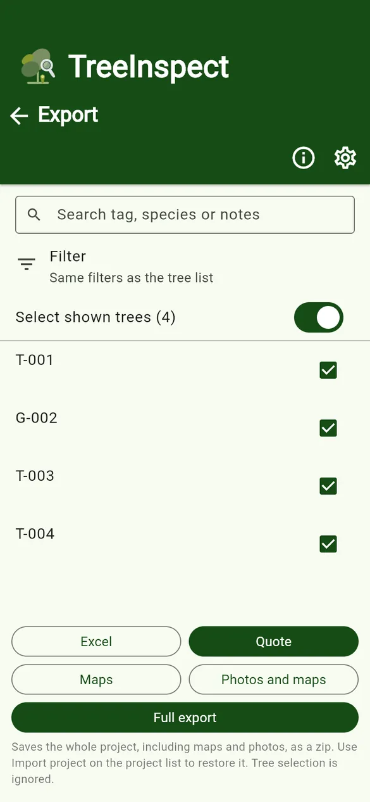
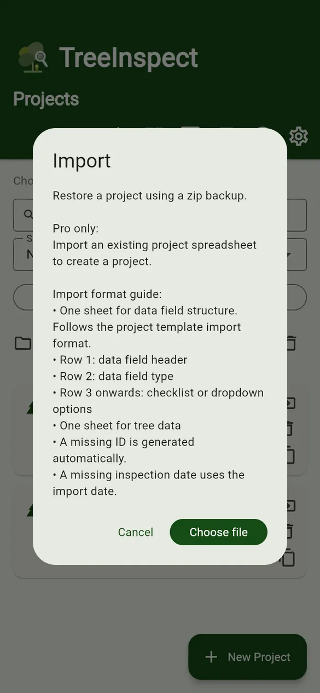
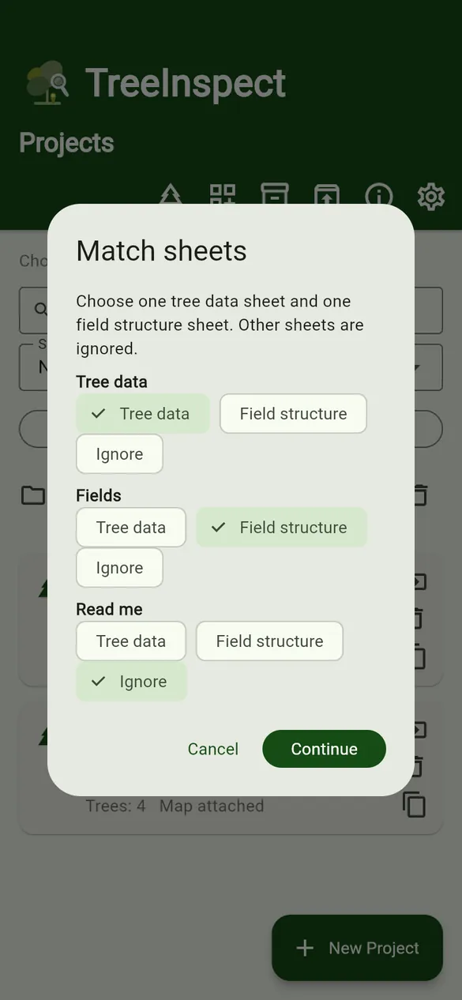
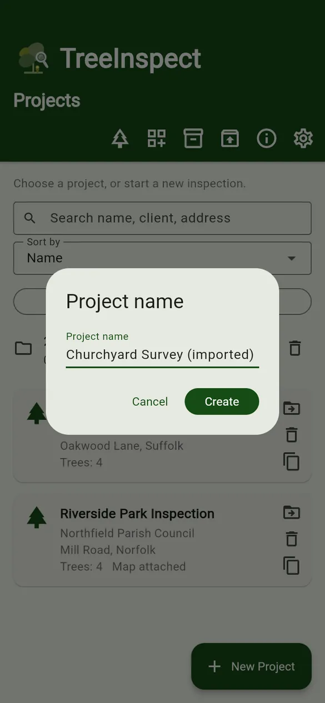
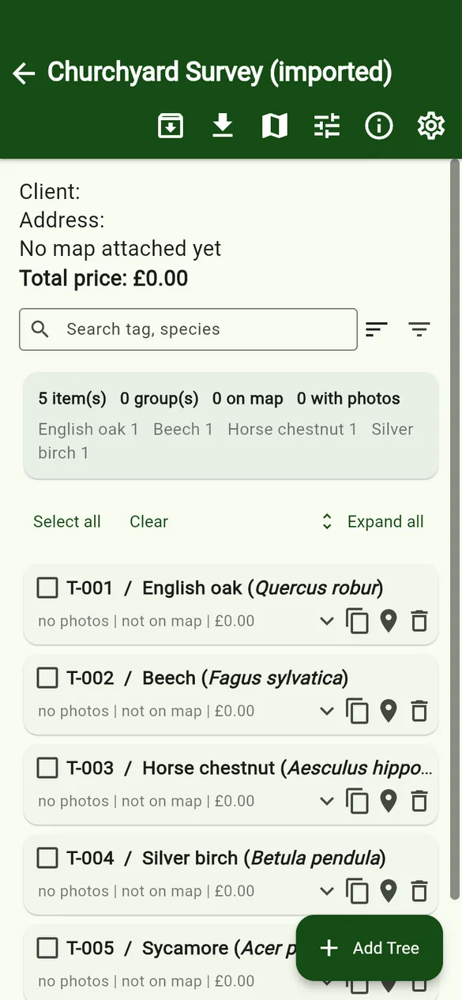
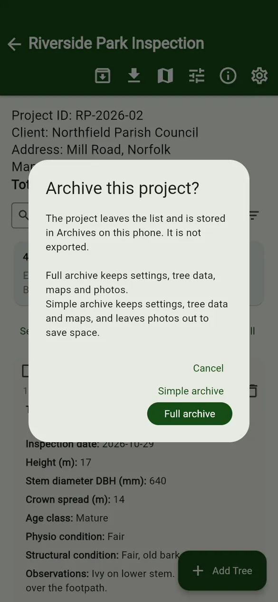

User guides › Import, export, backups and archive
Import, export, backups and archive
Export to Excel, quotes, maps and photos; full backups; importing projects; archiving.
Export
On the tree list tap the Export (download) icon. Tick the trees to include; Select shown trees follows the same filters as the tree list.

| Button | What you get |
|---|---|
| Excel | A spreadsheet of the selected trees, one row per tree, in the column order chosen under Export settings. |
| Quote PRO | A quote spreadsheet for the selected trees. Each ticked SOR item gets its own row. |
| Maps | The site plans with pins and drawings. |
| Photos and maps | A zip of photos named with your file name pattern, plus maps. Pro can stamp the name on each photo. |
| Full export | The whole project (settings, tree data, maps and photos) as a zip. Tree selection is ignored. This is your backup. |
The file is shared with your phone’s share sheet, so you can save it to Files or Drive, or email it.
Your survey data lives only on your phone. Make a Full export regularly and keep it somewhere safe. Uninstalling the app or losing the phone can lose data that has not been exported.
Restore a backup
- On the Projects screen tap Import backup.
- Tap Choose file and pick a Full export zip. The project is restored.

Create a project from a spreadsheet PRO
- Tap Import backup › Choose file and pick an .xlsx, .xls or .csv file.
- In Match sheets, choose one Tree data sheet and one Field structure sheet. Set other sheets to Ignore.
- Enter a Project name (it defaults to the file name) and tap Create.
- The field structure sheet uses the same layout as a template (titles, types, options).
- In the tree data sheet, row 1 is column titles. ID (or Tree ID / Tag), Species (or Tree species) and Date (or Inspection date) are recognised; other columns are matched to fields by title.
- A missing ID is numbered automatically, and a missing date uses the import date.



Download the sample project spreadsheet.
Archive
Archiving moves a project out of the list into Archives on the same phone, to tidy up and save space. It does not export or share a file.
- Full archive keeps settings, tree data, maps and photos.
- Simple archive keeps settings, tree data and maps, and leaves photos out to save space.
- Open Archives on the Projects screen and tap Restore to bring a project back.

Free version: a short advert may play before some exports, archiving and restoring. Let it finish to continue. Pro has no adverts.